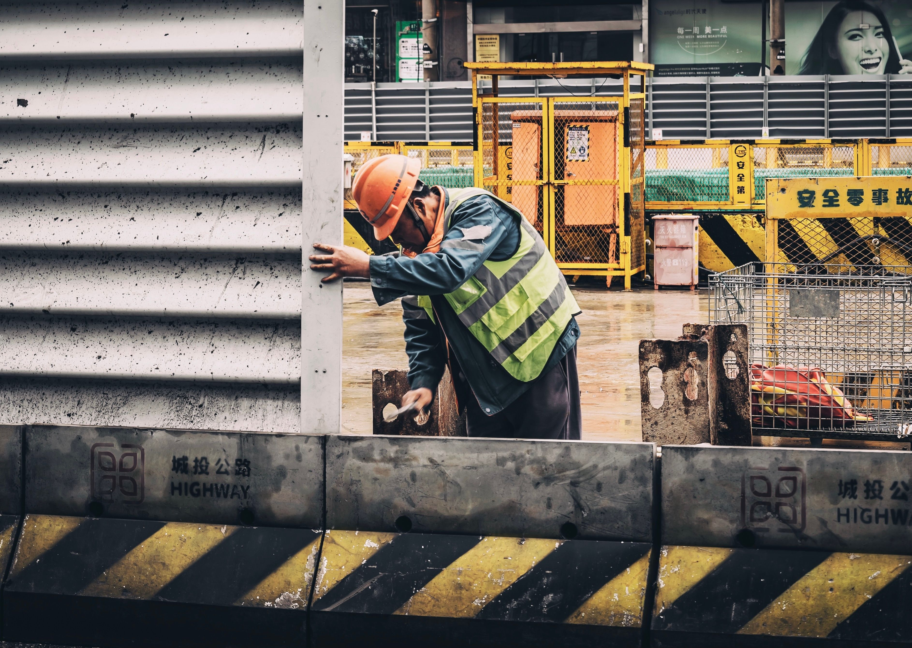
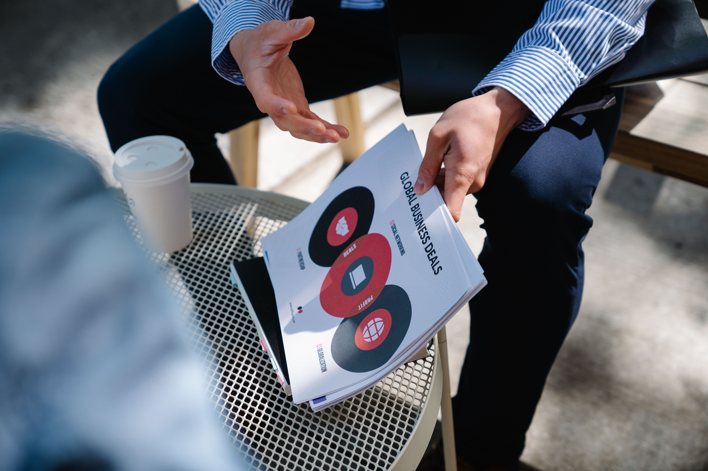

5 Kategori Layanan Sertifikasi
Kami menyediakan layanan sertifikasi lengkap untuk memenuhi kebutuhan bisnis dan karier Anda

Sertifikat Badan Usaha (SBU)
SBU merupakan sertifikat yang menunjukkan bahwa suatu badan usaha telah memenuhi persyaratan dan memiliki kemampuan untuk menjalankan kegiatan usaha sesuai bidang yang dimiliki. Sertifikasi ini menjadi salah satu syarat penting dalam mengikuti proyek pemerintah maupun swasta, meningkatkan kredibilitas perusahaan, serta memperkuat kepercayaan mitra bisnis.
SKK Konstruksi (Jenjang 1–9)
SKK Konstruksi merupakan bukti kompetensi tenaga kerja konstruksi yang diakui secara resmi. Sertifikat ini menjadi syarat penting bagi tenaga ahli maupun tenaga terampil untuk meningkatkan profesionalisme serta memenuhi ketentuan dalam dunia konstruksi.

Sertifikat Kompetensi (Serkom)
Kami melayani pengurusan Sertifikat Kompetensi Ketenagalistrikan (Serkom) untuk Level 1 hingga Level 6. Sertifikat ini menjadi bukti bahwa tenaga kerja memiliki kompetensi sesuai standar pada bidang ketenagalistrikan.

Sertifikasi ISO
Sertifikasi ISO membantu perusahaan membangun sistem manajemen yang lebih efektif, meningkatkan kualitas operasional, serta memperkuat kepercayaan pelanggan dan mitra bisnis.

Sertifikat Standar Konstruksi
Layanan pengurusan Sertifikat Standar Konstruksi membantu perusahaan memenuhi persyaratan legalitas usaha sesuai regulasi yang berlaku. Tim kami akan mendampingi setiap proses mulai dari konsultasi hingga sertifikat diterbitkan.